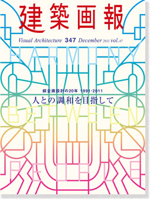
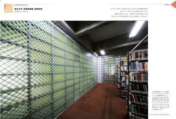
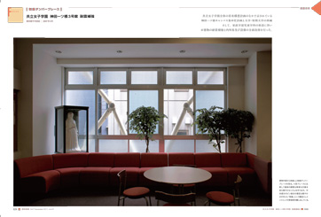
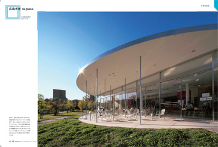
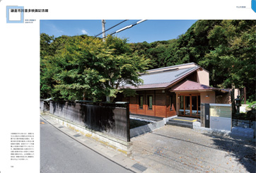

当サイトはJavaScriptをonにしてご覧ください。

建築画報
Visual Architecture 347
December 2011 Vol.47
綜企画設計の20年 1991-2011
人との調和を目指して
Harmony Between People
2011年に創設20周年を迎えた綜企画設計。
学校、病院、研究施設など多岐にわたる作品をデータや図面とともに振り返る1冊まるごと特集号。耐震特集では、FRP、制振ダンパーブレース、アウトフレームなどの耐震技術を、共立女子学園、東北大学などの大学施設での実績をもとに詳しく解説する。
定価 3,300円（税込）
ISBN 978-4-901772-60-0
ご注文




Message
「美を追求する姿勢を忘れない」
綜企画設計 鈴木隆志
国立病院機構 弘前病院
武道・体育センター和歌山ビッグウエーブ
国立病院機構 東埼玉病院
阿南市新クリーンセンター（仮称）
綜企画設計の技術力
耐震への5つの取り組み
横浜国立大学 教育人間科学部講義等7号館 耐震改修
共立女子学園 神田一ツ橋3号館 耐震補強
岡山大学 工学部1号館 耐震改修
岩手大学 総合教育研究棟 耐震補強
大学・研究施設
東京大学大学院 理学系研究科附属天文学教育研究センター
九州大学 コラボレーション・センター
農業・食品産業技術総合研究機構 動物衛生研究所 動物衛生高度研究施設
東京農工大学 小金井団地総合研究棟Ⅱ
鳥取大学 インターナショナル・アリド・ラボ
佐賀大学 海洋エネルギー研究センター
病院施設
国立病院機構 佐賀病院 新病棟・エネルギー棟
国立病院機構 医王病院 中病棟
教育施設
京都大学 本部棟
広島大学 la place
府中明郷学園
泉南市立くすのき幼稚園
宇治市立木幡小学校
ひかり児童クラブ
公共施設
国立赤城青少年交流の家 食堂棟
八幡浜公共職業安定所
鎌倉市立川喜多映画記念館
盛岡地家裁一関支部庁舎
広島高速総合管理基地
大栄野球場
芦屋市立みどり地域生活支援センター
会社概要
環境事業部
海外事業部
倉測建設コンサルタント株式会社
作品データ
Book review「新しい建築のみかた」
Information
追悼 林昌二先生